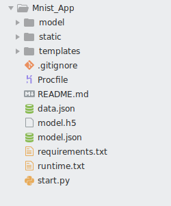
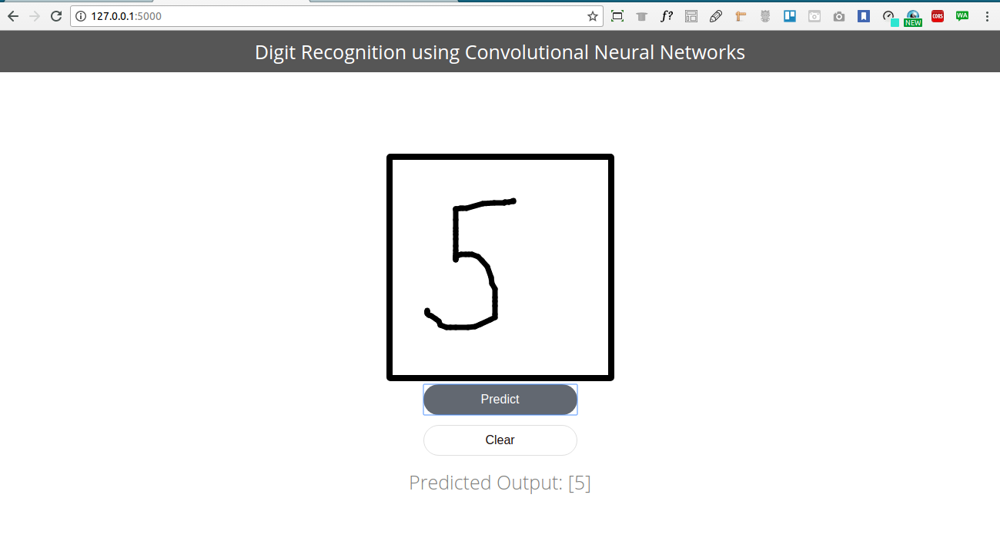

Building MNIST App using Flask

About the Project
In this part of Digit Recognition we will be building a Digit recognizer App where we will be building a flask web app so that we could draw any no and it will detect the number drawn on the screen
Uisng a Trained Model
As we have seen in part 1 ,we trained a Convolutional Neural Network on MNIST dataset and acheived a very decent accuracy on the train and test set.
We later save the model using keras model's to_json . we could also use python pickle module to save the model in binary format and later restore the model whenever we need it.
Saved model to disk
Data Preprocessing
Now as we have trained our model we could just pickup any handwritten digit image and our model will predict the correct label with flying colors !! The sad part is no.
We will have to do some transformations while feeding input to the image.First we will be installing flask on our system using pip python package manager.All the installation steps required for installation are mentioned in the FlaskOfficial Website
.Once Flask have been installed,we ill be setting our templates and app.pyThe Directory structure of our app is as follows
where the static folder contains all the js,css files where as model is used to store the saved model. Inside the model folder we have a file called load_model.py
This file compile the model and instead of learning the new weights and training the model we could use previously learned weights.
{% highlight python %} ############### model_load.py ############## import numpy as np import keras.models from scipy.misc import imread, imresize,imshow import tensorflow as tf from keras.models import Sequential from keras.models import Sequential from keras.layers import Dense, Dropout, Flatten from keras.layers import Conv2D, MaxPooling2D,MaxPool2D def init(): model = Sequential() model.add(Conv2D(64,(3,3),padding = 'Same',activation ='relu', input_shape = (28,28,1))) model.add(MaxPool2D()) model.add(Conv2D(32,(3,3),padding = 'Same',activation ='relu', input_shape = (28,28,1))) model.add(MaxPool2D()) model.add(Conv2D(16,(3,3),padding = 'Same',activation ='relu', input_shape = (28,28,1))) model.add(MaxPool2D()) model.add(Dropout(0.5)) model.add(Flatten()) model.add(Dense(128)) model.add(Dropout(0.5)) model.add(Dense(10,activation = "softmax")) #load woeights into new model model.load_weights("model.h5") print("Loaded Model from disk") #compile and evaluate loaded model model.compile(loss=keras.losses.categorical_crossentropy, optimizer=keras.optimizers.Adadelta(), metrics=['accuracy']) #loss,accuracy = model.evaluate(X_test,y_test) #print('loss:', loss) #print('accuracy:', accuracy) graph = tf.get_default_graph() return model, graph {% endhighlight %}Now as you can see model is compiled but not fitted .Only the weights learned are reused to compile the model.
Setting up the Server
Now we will be setting the starter file or entry file of the app start.py.This file contains roting and request handlinglogic.we will be focusing on the preprocessing part.
Now the Template of the app has canvas element which takes the input from user .The image drawn on the Canvas is served as a Base64 encoded string is posted to server.
The index root acts has a separate function for post at the index route.The Parse image function takes the base64 encoded string,converts it into image ,reshapes into the form Keras would expect the input to be [no_of_sample,height,weight,channel].
Now the image output.png written by the parse image function is read by the program.
Now the App reads the image and keras model.predict function takes the reshaped image of the form [-1,28,28,1].
Running the App
The App is ready to be served in Localhost.go to to the terminal and type the following
export FLASK_APP = //starter script.py python -m flask run
The App takes a little time to run,because model is loaded and weights are added.
A live version of my app is deployed to heroku. Try it out
{% include footer.html%}